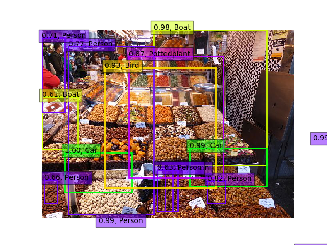
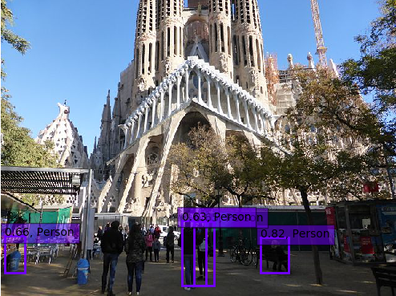
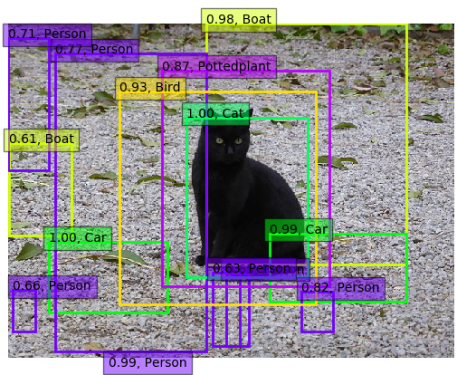
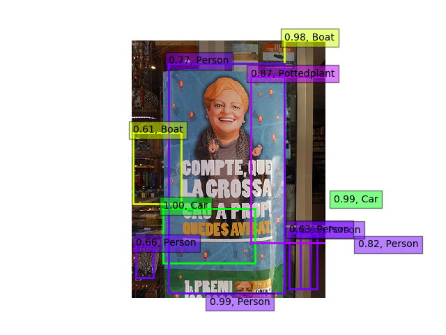
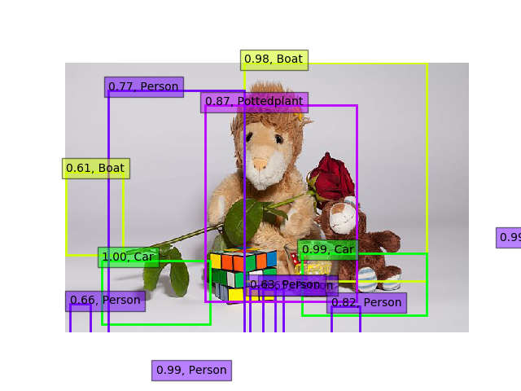
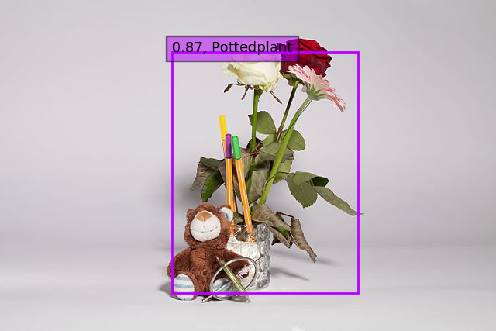
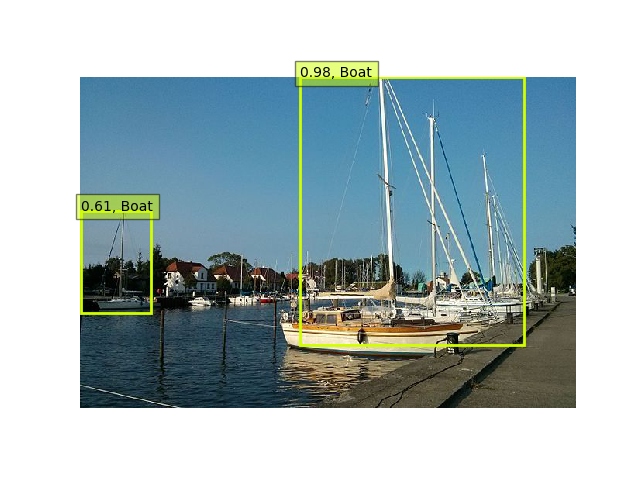
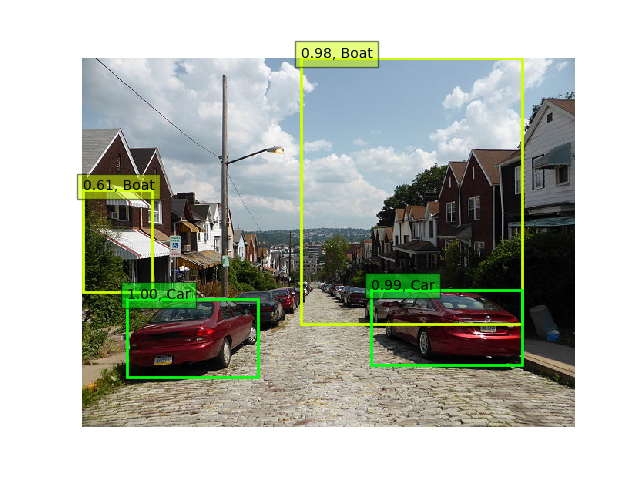

Object detection is the following task: You have an image and you want axis-aligned bounding boxes around every instance of a pre-defined set of object classes. The set of object classes is finite and typically not bigger than 1000.
Here is an easy to use example
Prerequisites
- Tensorflow
- Keras
weights_SSD300.hdf5(103.2MB, MD5:9ae4b93e679ea30134ce37e3096f34fa)ssd.pyandssd_utils.pyfrom github.com/MartinThoma/algorithms
Code
#!/usr/bin/env python
"""
Run object detection with VOC classes.
This is just a minor modification of code from
https://github.com/rykov8/ssd_keras
"""
from keras.applications.imagenet_utils import preprocess_input
from keras.preprocessing import image
import matplotlib.pyplot as plt
import numpy as np
from scipy.misc import imread
import sys
from ssd import SSD300
from ssd_utils import BBoxUtility
def create_overlay(img, results, voc_classes, plt_fname):
"""
Create a visualization of the found objects in img.
Paramters
---------
img : numpy array
Original array
results : numpy array
Found objects
voc_classes : list of strings
Names of the classes in Pascal VOC.
plt_fname : string
Path where the visualization gets stored.
"""
plt.clf()
# Parse the outputs.
det_label = results[:, 0]
det_conf = results[:, 1]
det_xmin = results[:, 2]
det_ymin = results[:, 3]
det_xmax = results[:, 4]
det_ymax = results[:, 5]
# Get detections with confidence higher than 0.6.
top_indices = [i for i, conf in enumerate(det_conf) if conf >= 0.6]
top_conf = det_conf[top_indices]
top_label_indices = det_label[top_indices].tolist()
top_xmin = det_xmin[top_indices]
top_ymin = det_ymin[top_indices]
top_xmax = det_xmax[top_indices]
top_ymax = det_ymax[top_indices]
colors = plt.cm.hsv(np.linspace(0, 1, 21)).tolist()
plt.imshow(img / 255.0)
currentAxis = plt.gca()
currentAxis.axis("off")
for i in range(top_conf.shape[0]):
xmin = int(round(top_xmin[i] * img.shape[1]))
ymin = int(round(top_ymin[i] * img.shape[0]))
xmax = int(round(top_xmax[i] * img.shape[1]))
ymax = int(round(top_ymax[i] * img.shape[0]))
score = top_conf[i]
label = int(top_label_indices[i])
label_name = voc_classes[label - 1]
display_txt = "{:0.2f}, {}".format(score, label_name)
coords = (xmin, ymin), xmax - xmin + 1, ymax - ymin + 1
color = colors[label]
currentAxis.add_patch(
plt.Rectangle(*coords, fill=False, edgecolor=color, linewidth=2)
)
currentAxis.text(
xmin, ymin, display_txt, bbox={"facecolor": color, "alpha": 0.5}
)
plt.savefig(plt_fname)
def main(img_paths):
"""
Detect objects in images.
Parameters
----------
img_paths : list of strings
"""
# Load the model
voc_classes = [
"Aeroplane",
"Bicycle",
"Bird",
"Boat",
"Bottle",
"Bus",
"Car",
"Cat",
"Chair",
"Cow",
"Diningtable",
"Dog",
"Horse",
"Motorbike",
"Person",
"Pottedplant",
"Sheep",
"Sofa",
"Train",
"Tvmonitor",
]
NUM_CLASSES = len(voc_classes) + 1
input_shape = (300, 300, 3)
model = SSD300(input_shape, num_classes=NUM_CLASSES)
model.load_weights("weights_SSD300.hdf5", by_name=True)
bbox_util = BBoxUtility(NUM_CLASSES)
# Load the inputs
inputs = []
images = []
for img_path in img_paths:
img = image.load_img(img_path, target_size=(300, 300))
img = image.img_to_array(img)
images.append(imread(img_path))
inputs.append(img.copy())
inputs = preprocess_input(np.array(inputs))
# Predict
preds = model.predict(inputs, batch_size=1, verbose=1)
results = bbox_util.detection_out(preds)
# Visualize
for i, img in enumerate(images):
create_overlay(img, results[i], voc_classes, "{}-det.png".format(img_paths[i]))
def get_parser():
"""Get parser object."""
from argparse import ArgumentParser, ArgumentDefaultsHelpFormatter
parser = ArgumentParser(
description=__doc__, formatter_class=ArgumentDefaultsHelpFormatter
)
parser.add_argument(
"-f", "--file", dest="filename", help="Detect objects in image", metavar="IMAGE"
)
parser.add_argument(
"--folder",
dest="folder",
help="Detect objects in JPG images in folder",
metavar="FOLDER",
)
return parser
if __name__ == "__main__":
args = get_parser().parse_args()
if args.folder is not None:
import glob
images = glob.glob("%s/*.jpg" % args.folder)
elif args.filename is not None:
images = [args.filename]
else:
args.print_help()
sys.exit(0)
main(images)
Examples
{kind=link}

{kind=link}

{kind=link}

{kind=link}

{kind=link}
{kind=link}

{kind=link}

{kind=link}
{kind=link}

{kind=link}

Conclusion
The person detector is somewhat useful out-of-the-box, but for the rest you will need to adjust the algorithm. Having only the 20 classes from Pascal VOC is not enough.
See also
- Dat Tran: Building a Real-Time Object Recognition App with Tensorflow and OpenCV, 22.06.2017